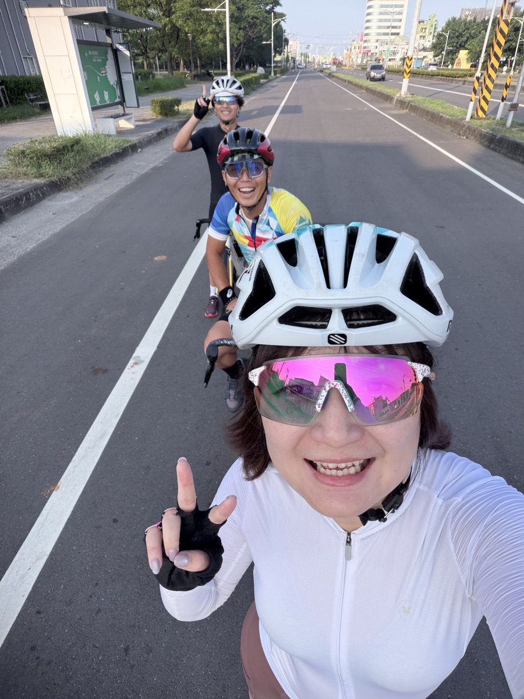

← 回到生活筆記
運動 × 醫療
騎完百K後，我重新看了一次自己的醫療保障

上個週末和車友騎了一趟百K。出發時天氣很好，一路上有說有笑。回程最後二十公里，大腿跟左邊的膝蓋開始抗議，到家只想躺平 😂
那天晚上一邊冰敷膝蓋，我一邊在想：如果哪天痠痛變成真的要看醫生、要做復健，我的保障到底夠不夠用？
身為保險顧問，我平常都在幫別人整理保單，這次也認真把自己的拿出來重新看一遍。
騎車的人，比較常遇到的是「小傷小痛」
愛騎車的你應該也有感覺，比較常遇到的不是什麼大事，而是這些日常的小狀況：
- 長時間騎乘後，膝蓋或下背痠痛
- 起步、停車時不小心滑倒的擦傷
- 需要去門診、做幾次復健，慢慢調整回來
這些狀況通常不嚴重，但看診、換藥、復健的次數一多，費用和時間也是一筆。
我這次確認的三件事
1. 看門診，保單有沒有給付？
很多醫療險主要給付住院或手術，單純看門診不一定有。如果是意外造成的傷，可以看看自己有沒有「傷害醫療」這類的保障，有的會給付門診的實際費用。
2. 復健的費用算不算？
這是我這次最想釐清的。復健能不能理賠，要看保單條款怎麼寫，也要看是什麼原因造成的。不確定的話，直接把條款拿出來對，或找熟悉的人一起看，會比自己猜清楚很多。
3. 保障的金額，跟現在的生活還搭得起來嗎？
有些保單是好幾年前買的，當時的額度不一定跟得上現在的醫療費用。不用急著改，但知道自己保障到哪裡，心裡會踏實很多。
把醫療顧好，才能放心繼續騎
整理完之後，我最大的感覺是：保險不是為了擔心什麼，而是讓我們可以更放心地去做喜歡的事。
知道自己哪裡有保障、哪裡還有空缺，下次再出發騎百K的時候，心情也會輕鬆一點 👍
如果你也想把手上的保單拿出來看看，卻不知道從哪裡開始，歡迎找我聊聊。我們先從你的騎車日常聊起 ☕
跟夏夏聊聊